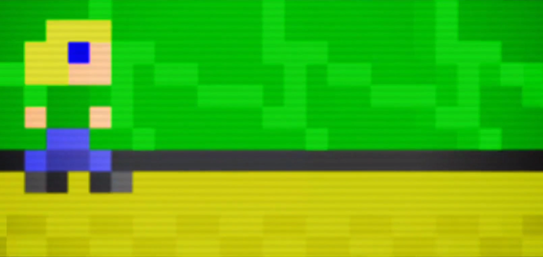

“Passage” by Jason Rohrer
2020/10/07
WeiminWang

At the beginning, it's all about the future, a life in front of you, even if it's not vague -- you haven't had a past.
As you gradually move to the right, you begin to see what's left behind -- the accumulation of memories. You will find a woman waiting for you, and you can choose to travel with her and explore together. Or we can avoid her and go alone. You can keep everything else to the right, but it's boring. Or go down into the maze and search for treasure at the expense of getting lost in it. I think it is narrative. For the end of the game is always the same -- death.
“Every Day the Same Dream” by Molleindustria
2020/10/11
WeiminWang
Simple style simple game operation, players only need to control the direction of the key and the space bar will be able to complete the game.The simple vector graphics express the mediocrity of an office worker, a face without facial features, a suit without characteristics, ordinary life and ordinary work, especially when players enter the company, rows and rows of people with their own appearance in the workplace are working, the tragic atmosphere is more prominent.
I think it is story. Because it has a different ending.